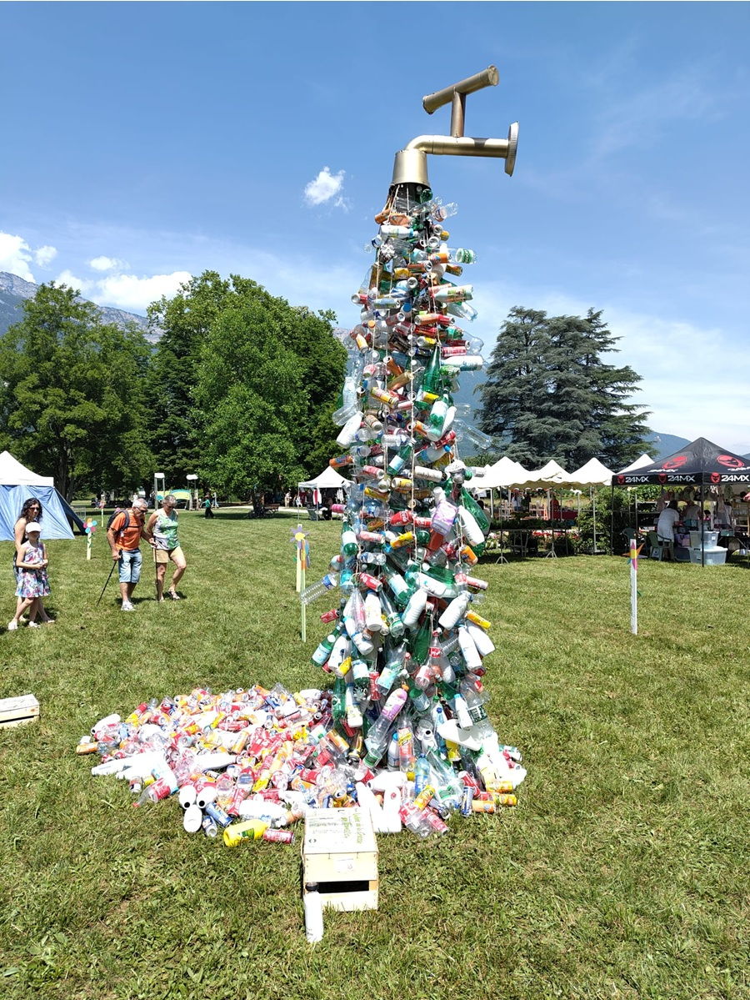
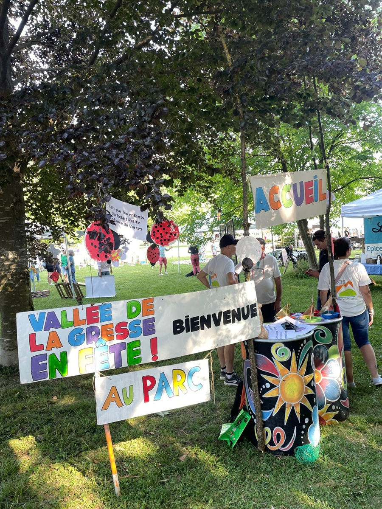

Lysiane Blachon
Je m'appelle Lysiane Blachon et je suis née le 25 septembre 2007. Je suis actuellement étudiante en première année de BUT Informatique à Grenoble (38). J'ai passé mes 3 dernières années au lycée Vaucanson (38) et suis issue d'un bac STI2D avec la spécialité SIN (Systèmes d'Information et Numérique). Je voue une passion particulière pour les langues et l'écriture. L'informatique m'attirait depuis la seconde, et j'étais persuadée de vouloir finir le reste de ma vie dedans. Cependant, ce portfolio est là pour vous permettre d'en apprendre un peu plus sur moi et pour vous présenter les projets que j'ai pu réaliser lors de cette première année d'études supérieures.
Parcours scolaire
Diplômes
Centres d'intérêt
Expériences professionnelles
Lien de l'association : Vallée de la Gresse en Transition

